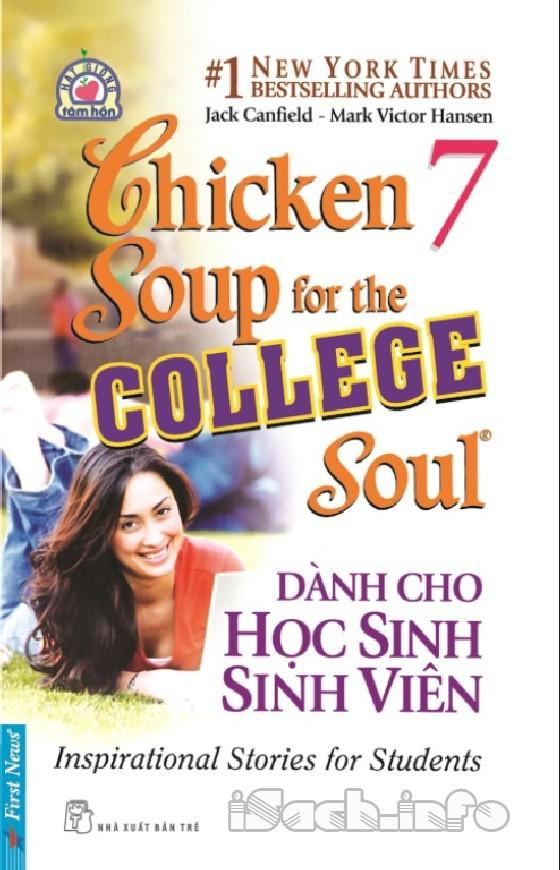

« Back
Dành Cho Học Sinh Sinh Viên
By Jack Canfield & Mark V. Hansen

Cùng Bạn Đọc.
Lời Giới Thiệu.
Tấm Thẻ Ghi Ý Tưởng.
Ngày Về Của Tên Nghịch Tử.
Ngày Vào Đời Của Christy.
Dám Chấp Nhận Rủi Ro!.
Đoạn Kết Câu Chuyện.
Bầy Vịt Của Emma.
Người Hùng Hi Hữu.
Vì Sao Của Tôi.
Chàng Trai Ngồi Ở Gốc Cây.
Quên Hết Lỗi Lầm.
Hani.
Khiếu Âm Nhạc.
Chucky Mullins 38.
Một Thông Điệp Có Ý Nghĩa Hơn.
Hạ Bệ Tên Khùng!.
Vì Gia Đình Cả Mà.
Hãy Suy Nghĩ Điều Này.
Về Tác Giả.
Sự Ra Đời Của “Chicken Soup For The Soul”.
Không Từ Bỏ Ước Mơ.
Chinh Phục Thế Giới.
“Chicken Soup For The Soul”.